일반기계기사 (2012-05-20 기출문제)
1과목: 재료역학
1. 길이 3 m의 부재가 하중을 받아 1.2 ㎜ 늘어났다. 이때 선형 탄성 거동을 갖는 부재의 변형률은?
- 3.6×10-4
- 3.6×10-3
- 4×10-4
- 4×10-3
(정답률: 59%)

2. 길이 3 m의 직사각형 단면을 가진 외팔보에 단위 길이당 ω의 등분포하중이 작용하여 최대 굽힘응력 50MPa이 발생할 경우 최대 전단응력은 약 몇 MPa인가? (단, 단면의 치수 폭×높이(b×h) = 6cm×10cm이다.)
- 0.83
- 1.25
- 0.63
- 1.45
(정답률: 42%)
3. 그림과 같은 보가 집중하중 P를 받고 있다. 최대 굽힘 모멘트의 크기는?
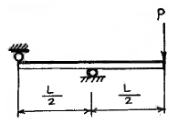
- PL
- PL/2
- PL/4
- PL/8
(정답률: 44%)
4. 그림과 같이 재료와 단면적이 같고 길이가 서로 다른 강봉에 지지되어 있는 보에 하중을 가해 수평으로 유지하기 위한 비 a/b 는?
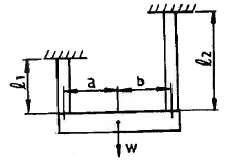
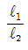
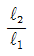
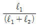
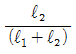
(정답률: 37%)
5. 길이가 L이고 직경이 d인 축과 동일 재료로 만든 길이 3L 인 축이 같은 크기의 비틀림모멘트를 받았을때, 같은 각도만큼 비틀어지게 하려면 직경은 얼마가 되어야 하는가?
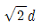
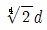
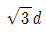
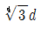
(정답률: 56%)
6. 그림에서와 같이 지름이 50cm, 무게가 100N의 잔디밭용 롤러를 높이 5cm의 계단위로 밀어서 막 움직이게 하는데 필요한 힘 F는 몇 N 인가?
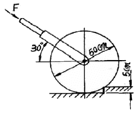
- 200
- 87
- 125
- 153
(정답률: 15%)
7. 중앙에 집중 모멘트 Mo (kN ㆍ m)가 작용하는 길이 L의 단순 지지보 내의 최대 굽힘응력은? (단, 보의 단면은 직경이 2a인 원이다.)
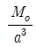
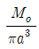
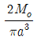
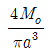
(정답률: 29%)
8. 그림에서 클램프(clamp)의 압축력이 P = 5kN 일 때 m-n 단면의 최소두께 h를 구하면 몇 cm 인가? (단, 직사각형 단면의 폭 b = 10mm, 편심거리 e = 50mm, 재료의 허용응력σw = 150 /MPa이다.)
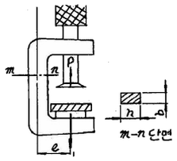
- 1.34
- 2.34
- 3.34
- 4.34
(정답률: 40%)
9. 그림과 같이 10cm × 10cm의 단면적을 갖고 양단이 회전단으로 된 부재가 중심축 방향으로 압축력 P가 작용하고 있을 때 장주의 길이가 2m라면 세장비는?
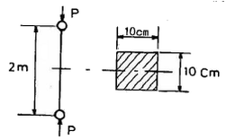
- 890
- 69
- 49
- 29
(정답률: 55%)
10. 다음과 같은 부재에 축 하중 P = 15kN이 가해졌을 때, x 방향의 길이는 0.003㎜ 증가하고, z 방향의 길이는 0.0002 ㎜ 감소하였다면 이 선형 탄성 재료의 포아송 비는?
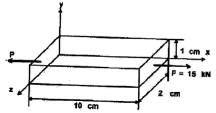
- 0.28
- 0.30
- 0.33
- 0.35
(정답률: 45%)
11. 그림과 같이 외팔보의 중앙에 집중 하중 P가. 작용하면 자유단의 처짐은? (단, 보의 굽힘강성 EI 는 일정하고, L은 보의 전체의 길이이다.)
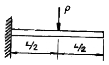
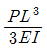
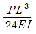
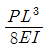
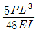
(정답률: 43%)
12. 그림과 같은 일단고정 타단 지지보에서 B점에서의 모멘트 MB는 몇 kN ∙ m 인가? (단, 균일단면보이며, 굽힘강성(EI)은 일정하다.)
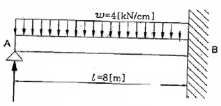
- 800
- 2000
- 3200
- 4000
(정답률: 53%)
13. 지름 d인 원형 단면봉이 비틀림 모멘트 T를 받을때, 봉의 표면에 발생하는 최대 전단응력은?(단, G는 전단 탄성계수, θ 는 봉의 단위 길이마다의 비틀림 각이다.)
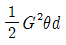
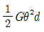
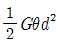
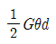
(정답률: 49%)
14. 그림과 같이 노치가 있는 둥근봉이 인장력 P =10kN을 받고 있다. 노치의 응력 집중계수가 a=2.5라면, 노치부의 최대응력은 약 몇 MPa 인가?
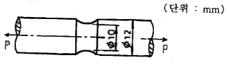
- 3180
- 51
- 221
- 318
(정답률: 33%)
15. 그림과 같이 평면응력 조건하에 600kPa의 인장응력과 400kPa의 압축응력이 작용할 때 인장응력이 작용하는 면과 30° 의 각도를 이루는 경사면에 생기는 수직응력은 몇 kPa인가?
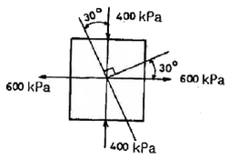
- 150
- 250
- 350
- 450
(정답률: 35%)
16. 단면적이 일정한 강봉이 인장하중 W를 받아 탄성한계 내에서 인장응력 σ가 발생하고, 이 때의 변형률 이 ε 이었다. 이 강봉의 단위체적 속에 저장되는 탄성에너지 U를 나타내는 식은? (단, 강봉의 탄성계수는 E 이다.)
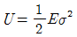
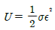
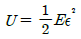
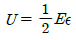
(정답률: 43%)
17. 두 변의 길이가 각각 b, h인 직사각형의 한 모서리 점에 관한 극관성 모멘트는?(오류 신고가 접수된 문제입니다. 반드시 정답과 해설을 확인하시기 바랍니다.)
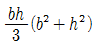
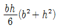
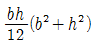
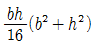
(정답률: 27%)
18. 동일한 전단력이 작용할 때 원형 단면 보의 지름 D를 3D로 크게 하면 최대 전단응력
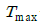
는 어떻게 되는가?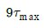
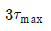
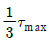
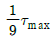
(정답률: 52%)
19. 그림과 같이 지름 6 ㎜ 강선의 상단을 고정하고 하단에 지름 d1 = 100 ㎜의 추를 달고 접선방향에 F= 10 N 의 힘을 작용시켜 비틀면 강선이 φ = 6.2° 로비틀어졌다. 이 때 강선의 길이가 ℓ= 2m라면 이 강선의 전단 탄성계수는 약 몇 GPa 인가?
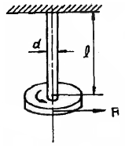
- 12
- 84
- 18
- 73
(정답률: 39%)
20. 순수굽힘을 받는 선형 탄성 균일단면보의 전단력F 와 굽힘모멘트 M 및 분포하중 ω[N/m]사이에 옳은 관계식은?
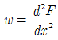
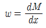
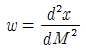
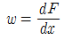
(정답률: 43%)
2과목: 기계열역학
21. 정압비열 209.5J/kg∙K 이고, 정적비열 159.6J/kg∙K 인 이상기체의 기체상수는?
- 11.7 J/kg∙K
- 27.4 J/kg∙K
- 32.6 J/kg∙K
- 49.9 J/kg∙K
(정답률: 53%)
22. 증기압축 냉동기에서 냉매가 순환되는 경로를 올바르게 나타낸 것은?
- 증발기 → 압축기 → 응축기 → 수액기 → 팽창밸브
- 증발기 → 응축기 → 수액기 → 팽창밸브 → 압축기
- 압축기 → 수액기 → 응축기 → 증발기 → 팽창밸브
- 압축기 → 증발기 → 팽창밸브 → 수액기 → 응축기
(정답률: 41%)
23. 대기압 하에서 물질의 질량이 같을 때 엔탈피의 변화가 가장 큰 경우는?
- 100℃ 물이 100℃ 수증기로 변화
- 100℃ 공기가 200℃ 공기로 변화
- 90℃의 물이 91℃ 물로 변화
- 80℃의 공기가 82℃ 공기로 변화
(정답률: 47%)
24. A, B 두 종류의 기체가 한 용기 안에서 박막으로 분리되어 있다. A의 체적은 0.1m3, 질량은 2 kg이고, B의 체적은 0.4 m3, 밀도는 1 kg/m3이다. 박막이 파열되고 난 후에 평형에 도달하였을 때 기체 혼합물의 밀도는?
- 4.8 kg/m3
- 6.0 kg/m3
- 7.2 kg/m3
- 8.4 kg/m3
(정답률: 33%)
25. 증기를 가역 단열과정을 거쳐 팽창시키면 증기의 엔트로피는?
- 증가한다.
- 감소한다.
- 변하지 않는다.
- 경우에 따라 증가도 하고, 감소도 한다.
(정답률: 48%)
26. 체적이 일정하고 단열된 용기 내에 80℃, 320kPa의 헬륨 2 kg이 들어 있다. 용기 내에 있는 회전날개가 20 W의 동력으로 30분 동안 회전한다. 최종 온도는? (단, 헬륨의 정적비열(Cv)=3.12kJ/kg ⁃ K 이다.)
- 76.2 ℃
- 80.3 ℃
- 82.9 ℃
- 85.8 ℃
(정답률: 41%)
27. 해수면 아래 20 m 에 있는 수중다이버에게 작용하는 절대압력은 약 얼마인가? (단, 대기압은 101 kPa이고, 해수의 비중은 1.03이다.)
- 202 kPa
- 303 kPa
- 101 kPa
- 504 kPa
(정답률: 50%)
28. 압력 200 kPa, 체적 0.4m3인 공기가 정압 하에서 체적이 0.6m3로 팽창 하였다. 이 팽창 중에 내부에너지가 100 kJ만큼 증가하였으면 팽창에 필요한 열량은?
- 40 kJ
- 60 kJ
- 140 kJ
- 160 kJ
(정답률: 42%)
29. 밀폐계(closed system)의 가역정압과정에서 열전달량은?
- 내부에너지의 변화와 같다.
- 엔탈피의 변화와 같다.
- 엔트로피의 변화와 같다.
- 일과 같다.
(정답률: 38%)
30. 실린더 내의 이상기체 1 kg이 온도를 27℃로 일정하게 유지하면서 200 kPa에서 100 kPa 까지 팽창하였다. 기체가 한 일은? (단, 이 기체의 기체상수는 1 kJ/kg ⁃ K 이다.)
- 27 kJ
- 208 kJ
- 300 kJ
- 433 kJ
(정답률: 40%)
31. 어떤 발명가가 태양열 집열판에서 나오는 77℃의 온수에서 1 kW의 열을 받아 동력을 생성하는 열기관을 고안하였다고 주장한다. 이러한 열기관이 생성할 수 있는 최대 출력은? (단, 주위 공기의 온도는 27℃라고 가정한다.)
- 1000 W
- 649 W
- 333 W
- 143 W
(정답률: 43%)
32. 열펌프를 난방에 이용하려 한다. 실내 온도는 18℃이고, 실외 온도는 -15℃이며 벽을 통한 열손실은 12 kW이다. 열펌프를 구동하기 위해 필요한 최소 일률(동력)은?
- 0.65 kW
- 0.74 kW
- 1.36 kW
- 1.53 kW
(정답률: 45%)
33. 카르노사이클로 작동되는 열기관이 600 k에서 800 kJ의 열을 받아 300 k에서 방출한다면 일은 약 몇 kJ인가?
- 200
- 400
- 500
- 900
(정답률: 45%)
34. 출력이 50 kW인 동력 기관이 한 시간에 13 kg의 연료를 소모한다. 연료의 발열량이 45000 kJ/kg이라면, 이 기관의 열효율은 약 얼마인가?
- 25%
- 28%
- 31%
- 36%
(정답률: 50%)
35. 랭킨사이클(Rankine cycle)에 관한 설명 중 틀린것은?
- 보일러에서 수증기를 과열하면 열효율이 증가한다.
- 응축기 압력이 낮아지면 열효율이 증가한다.
- 보일러에서 수증기를 과열하면 터빈 출구에서 건도가 감소한다.
- 응축기 압력이 낮아지면 터빈 날개가 부식될 가능성이 높아진다.
(정답률: 40%)
36. 523℃의 고열원으로부터 1 MW의 열을 받아서 300 K 의 대기로 600 kW의 열을 방출하는 열기관이 있다. 이 열기관의 효율은 약 몇 % 인가?
- 40
- 45
- 60
- 65
(정답률: 34%)
37. 초기 온도와 압력이 50℃, 600 kPa인 질소가 100kPa까지 가역 단열팽창 하였다. 이 때 온도는 약 몇 K인가? (단, 비열비 k=1.4 이다.)
- 194
- 294
- 467
- 539
(정답률: 38%)
38. 난방용 열펌프가 저온 물체에서 1500 kJ/h로 열을 흡수하여 고온 물체에 2100 kJ/h로 방출한다. 이 열펌프의 성능계수는?
- 2.0
- 2.5
- 3.0
- 3.5
(정답률: 50%)
39. 압력 1000kPa, 온도 300℃ 상태의 수증기[엔탈피(h)=3⑤1.15 kJ/kg, 엔트로피(s)=7.1228 kJ/kg ⁃ K]가 증기 터빈으로 들어가서 100 kPa 상태로 나온다. 터빈의 출력일은 370 kJ/kg이다. 수증기표를 이용하여 터빈 효율을 구하면 약 얼마인가?
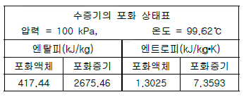
- 0.156
- 0.332
- 0.668
- 0.798
(정답률: 26%)
40. 어느 내연기관에서 피스톤의 흡기과정으로 실린더 속에 0.2 kg의 기체가 들어 왔다. 이것을 압축할 때 15 kJ의 일이 필요하였고, 10kJ의 열을 방출하였다고 한다면, 이 기체 1 kg당 내부에너지의 증가량은?
- 10 kJ
- 25 kJ
- 35 kJ
- 50 kJ
(정답률: 48%)
3과목: 기계유체역학
41. 원관 내의 유동이 완전 발달된 유동일 경우, 수두손실의 설명으로 옳은 것은?
- 벽면 전단응력에 비례한다.
- 벽면 전단응력의 제곱에 비례한다.
- 벽면 전단응력의 제곱근에 비례한다.
- 벽면 전단응력과 무관하다.
(정답률: 26%)
42. 체적이 30m3인 어느 기름의 무게가 247kN이었다면 비중은?
- 0.80
- 0.82
- 0.84
- 0.86
(정답률: 50%)
43. 수평으로 놓인 파이프에 면적이 10cm2인 오리피스가 설치되어 있고 물이 5㎏/s만큼 흐른다. 오리피스 전후의 압력차이가 8㎪이면 이 오리피스의 유량계수는?
- 0.63
- 0.72
- 0.88
- 1.25
(정답률: 16%)
44. 계기 압력(gauge pressure)이란 무엇인가?
- 측정위치에서의 대기압을 기준으로 하는 압력
- 표준 대기압을 기준으로 하는 압력
- 절대압력 0(영)을 기준으로 하여 측정하는 압력
- 임의의 압력을 기준으로 하는 압력
(정답률: 30%)
45. 수력기울기선(Hydraulic Grade Line)의 설명으로 가장 적당한 것은?
- 에너지선보다 위에 있어야 한다.
- 항상 수평이 된다.
- 위치 수두와 속도 수두의 합을 나타낸다.
- 위치 수두와 압력 수두의 합을 나타낸다.
(정답률: 38%)
46. 길이가 50m인 배가 8㎧의 속도로 진행하는 경우를 모형 배로써 조파저항에 관한 실험하고자 한다. 모형 배의 길이가 2m이면 모형 배의 속도는 약 몇 ㎧로 하여야 하는가?
- 1.60
- 1.82
- 2.14
- 2.30
(정답률: 46%)
47. 10m 입방체의 개방된 탱크에 비중 0.85의 기름이 가득 차있을 때 탱크 밑면이 받는 압력은 계기압력으로 몇 ㎪인가?
- 8330
- 833
- 83.3
- 0.833
(정답률: 39%)
48. 간격 h0만큼 떨어진 두 평판사이의 유동에서 아래 평판으로부터 높이 h인 곳의 속도분포가 다음과 같이 주어졌다. 기준 간격이 h0 =50㎜, 최대속도가 Vmax=0.3㎧일 때, 유동의 평균속도는 몇 m/s인가?
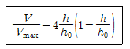
- 0.1
- 0.2
- 0.25
- 0.4
(정답률: 36%)
49. 그림과 같은 관로 내를 흐르는 물의 유량은 몇 m3/s 인가? (단, 관 벽에서는 마찰이 없다고 가정한다.)
- 0.0175
- 0.0045
- 0.0017
- 0.014
(정답률: 26%)
50. 지름 0.2m, 길이 10m인 파이프에 기름(비중 0.8,동점성계수 1.2×10-4m2/s)이 0.0188m3/s의 유량으로 흐른다. 마찰손실 수두는 몇 m 인가?
- 0.013
- 0.029
- 0.035
- 0.⑤9
(정답률: 48%)
51. 온도 27℃, 절대압력 380㎪인 이산화탄소가 1.5㎧로 지름 5㎝인 관속을 흐르고 있을 때 유동상태는? (단, 기체상수 R=187.8N·m/㎏·K, 점성계수μ=1.77×10-5㎏/m·s, 상임계 레이놀즈수는 4000, 하임계 레이놀즈수는 2130이라 한다.)
- 층류
- 난류
- 천이구역
- 층류저층
(정답률: 45%)
52. 어떤 오일의 동점성계수가 2×10-4m2/s이고 비중이 0.9라면 점성계수는 몇 ㎏/(m·s)인가? (단, 물의 밀도는 1000 kg/m3 이다.)
- 0.2
- 2.0
- 0.18
- 1.8
(정답률: 49%)
53. 액체 속에 잠겨있는 곡면에 작용하는 힘의 수평분력에 대한 설명으로 알맞은 것은?
- 곡면의 수직방향으로 위쪽에 있는 액체의 무게
- 곡면에 의하여 떠받치고 있는 액체의 무게
- 곡면의 도심에서의 압력과 면적과의 곱
- 곡면을 수직평면에 투영한 평면에 작용하는 힘
(정답률: 34%)
54. 경계층의 박리(separation)가 일어나는 주 원인은?
- 압력이 증기압 이하로 떨어지기 때문
- 압력 구배가 0으로 감소하기 때문
- 경계층의 두께가 0으로 감소하기 때문
- 역압력 구배 때문
(정답률: 46%)
55. 체적 탄성 계수의 단위는?
- 압력 단위와 같다.
- 체적 단위와 같다.
- 압력 단위의 역수이다.
- 체적 단위의 역수이다.
(정답률: 47%)
56. 경계층의 속도분포가 u=10y(1+0.⑤y3)이고 y방향의 속도 성분 v=0일 때 벽면으로부터 수직거리 y=1m 지점에서의 와도(vorticity)는?
- -6 s-1
- -10.5 s-1
- -12 s-1
- -24 s-1
(정답률: 25%)
57. 그림과 같이 단면적 A1은 0.4m2, 단면적 A2는 0.1m2인 동일 평면상의 관로에서 물의 유량이 1000L/s일때 관을 고정시키는 데 필요한 x방향의 힘 Fx의 크기는? (단, 단면 1과 2의 높이차는 1.5m이고, 단면 2에서 물은 대기로 방출되며, 곡관의 자체 중량, 곡관 내부물의 중량 및 곡관에서의 마찰손실은 무시한다.)
- 10159 N
- 15358 N
- 20370 N
- 24018 N
(정답률: 21%)
58. 공기의 속도 24㎧인 풍동내에서 익현길이 1m, 익의 폭 5m인 날개에 작용하는 양력은 몇 N인가? (단, 공기의 밀도는 1.2㎏/m3, 양력계수는 0.455이다.)
- 1572
- 786
- 393
- 91
(정답률: 54%)
59. 다음 설명 중 틀린 것은?
- 유선위의 어떤 점에서의 접선방향은 그 점에서의 속도 벡터의 방향과 일치한다.
- 유적선은 유선의 유동 특성이 변하지 않는 선이다.
- 두 점 사이를 지나는 유량은 그 두 점의 유동함수 값의 차이에 비례한다.
- 연속 방정식이란 질량의 보존법칙을 의미한다.
(정답률: 34%)
60. 다음 ΔP, L, Q. p를 결합했을 때 무차원항은? (단, ΔP :압력차, p :밀도, L :길이, Q :유량)
(정답률: 45%)
4과목: 기계재료 및 유압기기
61. 고속도강의 제조에 사용되지 않는 원소는?
- 덩스텐(W)
- 바나듐(V)
- 알루미늄(Al)
- 크롬(Cr)
(정답률: 69%)
62. 다음 재료 중 고강도 합금으로써 항공기용 재료에 사용되는 것은?
- Naval brass
- 알루미늄 청동
- 베릴륨 동
- Extra Super Duralumin(ESD)
(정답률: 75%)
63. 탄소공구강 재료의 구비 조건으로 틀린 것은?
- 상온 및 고온경도가 클 것
- 내마모성이 작을 것
- 가공 및 열처리성이 양호할 것
- 강인성 및 내충격성이 우수할 것
(정답률: 66%)
64. 금형의 표면과 중심부 또는 얇은부분과 두꺼운부분 등에서 담금질할 때 균열이 발생하는 가장 큰 이유는?
- 마텐자이트 변태 발생 시간이 다르기 때문에
- 오스테나이트 변태 발생 시간이 다르기 때문에
- 트루스타이트 변태 발생 시간이 늦기 때문에
- 솔바이트 변태 발생 시간이 빠르기 때문에
(정답률: 53%)
65. 주철의 성장을 방지하는 일반적인 방법이 아닌 것은?
- 흑연을 미세하게 하여 조직을 치밀하게 한다.
- C, Si 량을 감소시킨다.
- 탄화물 안정원소인 Cr, Mn, Mo, V 등을 첨가한다.
- 주철을 720℃ 정도에서 가열, 냉각시킨다.
(정답률: 44%)
66. 구상흑연 주철에서 흑연을 구상으로 만드는데 사용하는 원소는?
- Ni
- Ti
- Mg
- Cu
(정답률: 66%)
67. 담금질 조직 중 가장 경도가 높은 것은?
- 펄라이트
- 마텐자이트
- 솔바이트
- 트루스타이트
(정답률: 72%)
68. 노 안에서 페로실리콘(Fe-Si), 알루미늄 등의 강력한 탈산제를 첨가하여 충분히 탈산시킨 강괴는?
- 세미킬드 강괴
- 림드 강괴
- 캡드 강괴
- 킬드 강괴
(정답률: 66%)
69. 강의 쾌삭성을 증가시키기 위하여 첨가하는 원소는?
- Pb, S
- Mo, Ni
- Cr, W
- Si, Mn
(정답률: 57%)
70. 순철(pure jron)에 없는 변태는?
- A1
- A2
- A3
- A4
(정답률: 70%)
71. 액추에이터의 공급 쪽 관로에 설정된 바이패스 관로의 흐름을 제어함으로써 속도를 제어하는 회로는?
- 미터 인 회로
- 미터 아웃 회로
- 블리드 오프 회로
- 클램프 회로
(정답률: 54%)
72. 수 개의 볼트에 의하여 조임이 분할되기 때문에 조임이 용이하여 대형관의 이음에 편리한 관이음 방식은?
- 나사 이음
- 플랜지 이음
- 플레어 이음
- 바이트형 이음
(정답률: 60%)
73. 그림과 같이 유체가 단면적이 다른 파이프 통과할때 단면적 A2지점에서의 유속은 몇 m/s 인가? (단, 단면적 A1에서의 유속 v1=4m/s이고, 각각의 단면적은 A1=0.2cm2, A2=0.008cm2이며, 연속의 법칙을 만족한다.)
- 100
- 50
- 25
- 12.5
(정답률: 60%)
74. 유압 시스템에서 조작단이 일을 하지 않을 때 작동유를 탱크로 귀환시켜 펌프를 무부하로 만드는 무부하 회로를 구성할 때의 장점이 아닌 것은?
- 펌프의 구동력 절약
- 유압유의 노화 방지
- 유온 상승을 통한 효율 증대
- 펌프 수명 연장
(정답률: 54%)
75. 어큐물레이터(accumulator)의 역할에 해당하지 않는 것은?
- 유압 회로 중 오일 누설 등에 의한 압력강하를 보상하여 준다.
- 갑작스런 충격압력을 막아 주는 역할을 한다.
- 유압 펌프에서 발생하는 맥동을 흡수하여 진동이나 소음을 방지한다.
- 축척된 유압에너지의 방출 사이클 시간을 연장한다.
(정답률: 66%)
76. 릴리프 밸브(Relief valve)와 리듀싱 밸브(Reducing valve)는 다음 중 어떤 밸브에 속하는가?
- 방향 제어 밸브
- 압력 제어 밸브
- 유량 제어 밸브
- 유압 서보 밸브
(정답률: 64%)
77. 베인 펌프의 일반적인 특징에 해당하지 않는 것은?
- 송출 압력의 맥동이 적다.
- 고장이 적고 보수가 용이하다
- 압력 저하가 적어서 최고 토출 압력이 210 kgf/cm2 이상 높게 설정할 수 있다.
- 펌프의 유동력에 비하여 형상치수가 적다.
(정답률: 43%)
78. 구조가 간단하며 값이 싸고 유압유 중의 이물질에 의한 고장이 생기기 어렵고 가혹한 조건에 잘 견디는 유압모터로 가장 적합한 것은?
- 베인 모터
- 기어 모터
- 액시얼 피스톤 모터
- 레이디얼 피스톤 모터
(정답률: 59%)
79. 유압 장치를 새로 설치하거나 작동유를 교환할 때 관내의 이물질 제거 목적으로 실시하는 파이프 내의청정 작업은?
- 플러싱
- 블랭킹
- 커미싱
- 엠보싱
(정답률: 71%)
80. 유압 펌프에서 유동하고 있는 작동유의 압력이 국부적으로 저하되어, 증기나 함유 기체를 포함하는 기포가 발생하는 현상은?
- 폐입 현상
- 숨돌리기 현상
- 캐비테이션 현상
- 유압유의 열화 촉진 현상
(정답률: 65%)
5과목: 기계제작법 및 기계동력학
81. Al2O3 분말에 약 70%의 TiC 또는 TiN 분말을 30% 정도 혼합하여 수소 분위기 속에서 소결하여 제작한 절삭 공구는?
- 서멧(cermet)
- 입방정 질화붕소(CBN)
- 세라믹(ceramic)
- 스텔라이트(stellite)
(정답률: 34%)
82. 일반적으로 초경합금 공구를 원통 연삭할 때 어떤 숫돌 입자를 선택하는 것이 좋은가?
- A
- WA
- C
- GC
(정답률: 36%)
83. 주로 내경측정에 이용되는 측정기는?
- 실린더 게이지
- 하이트 게이지
- 측장기
- 게이지 블록
(정답률: 57%)
84. 공구의 재료적 결함이나 미세한 균열이 잠재적 원인이 되며 공구 인선의 일부가 미세하게 파괴되어 탈락하는 현상은?
- 크레이터 마모(crater wear)
- 플랭크 마모(flank wear)
- 치핑(chipping)
- 온도파손(temperature failure)
(정답률: 37%)
85. 아래 그림에서 굽힘가공에 필요한 판재의 길이를 구하는 식으로 맞는 것은? (단, L 은 판재의 전체 길이, a, b는 직선 부분 길이, R 은 원호의 안쪽 반지름, θ 는 원호의 굽힘각도(°), t, 는 판재의 두께이다.)
(정답률: 27%)
86. 용접을 압접(壓接)과 융접(融接)으로 분류할 때, 압접에 속하는 것은?
- 불활성 가스 아크 용접
- 산소 아세틸렌 가스 용접
- 플래시 용접
- 테르밋 용접
(정답률: 44%)
87. 인베스트먼트 주조법과 비교한 셀 몰드법(shell molding process)에 대한 설명으로 틀린 것은?
- 셀 몰드법은 얇은 셀을 사용하므로 조형재가 소량으로 사용된다.
- 주물 온도가 높은 강이나 스텔라이트의 주조에 적합하다.
- 조형 제작방법이 간단해서 고가의 기계설비가 필요없고 생산성이 높다.
- 이 조형법을 발명한 사람의 이름을 따서 크로닝법(Croning process)이라고도 한다.
(정답률: 43%)
88. 강재의 경화처리 방법 중 표면 경화법에 해당하지 않는 것은?
- 고주파 경화법
- 가스 침탄법
- 시멘테이션
- 파텐팅
(정답률: 39%)
89. 외측 마이크로미터 측정면의 평면도 검사에 필요한 기기는?
- 다이얼 게이지
- 옵티컬 플랫
- 컴비네이션 세트
- 플러그 게이지
(정답률: 47%)
90. 금속재료를 회전하는 롤러(Roller)사이에 넣어 가압함으로써 단면적을 감소시켜 길이 방향으로 늘리는 작업은?
- 압연
- 압출
- 인발
- 단조
(정답률: 63%)
91. 20t의 철도차량이 0.5 m/s의 속력으로 직선 운동하여 정지되어 있는 30T의 화물차량과 결합한다. 결합하는 과정에서 차량에 공급되는 동력은 없으며 브레이크도 풀려 있다. 결합 직후의 속력은 몇 m/s 인가?
- 0.25
- 0.20
- 0.15
- 0.10
(정답률: 37%)
92. 질량 100kg의 상자가 15° 경사면에서 미끄러져 내려간다. 점 B에서의 속도가 4 m/s였다면, 점 A에서의 속도는? (단, 중력가속도는 9.81m/s2, 운동마찰계수는0.3 이다.)
- 2 m/s
- 3.15 m/s
- 4.7 m/s
- 9 m/s
(정답률: 26%)
93. 길이가 1 m이고 질량이 5kg인 균일한 막대가 그림과 같이 지지되어 있다. C점은 힌지로 되어 있어, B점에 연결된 줄이 갑자기 끊어졌을 때 막대는 자유로이 회전한다. 줄이 끊어지는 순간 C점에 작용하는 반력은 몇 N 인가?
- 49
- 28
- 21
- 14
(정답률: 14%)
94. 그림과 같이 스프링상수 10N/㎜인 3개의 스프링이 조립되어 그 끝에 무게 50N인 추가 달려있다. 스프링의 처짐량은 몇 ㎜ 인가?
- 1.67
- 3.33
- 7.5
- 2.5
(정답률: 39%)
95. 두 개의 조화운동 x1=4sin10t 와 x2=4sin10.2t를 합성하면 맥놀이(beat)현상이 발생하는데 이 때 맥놀이 진동수(Hz)는? (단, t의 단위는 s이다.)
- 0.0159
- 0.0318
- 31.4
- 62.8
(정답률: 35%)
96. 질량 0.25kg의 물체가 스프링상수 0.1533 N/㎜인 한쪽이 고정된 스프링에 매달려 있을 때 고유진동수(Hz)와 정적 처짐(㎜)을 각각 구한 것은? (단, 스프링의 질량은 무시한다.)
- 3.94, 6
- 3.94, 16
- 0.99, 6
- 0.99, 16
(정답률: 42%)
97. 다음 중 각 물리량에 대한 차원 표시가 틀린 것은? (단, M : 질량, L : 길이, T : 시간)
- 각가속도 : T-2
- 에너지 : ML2T-1
- 선형운동량 : MLT-1
- 힘 : MLT-2
(정답률: 42%)
98. 경주용 자동차가 달리는 트랙의 반경은 180 m 이다. 속도 30 m/s로 달리기 위한 수평면과 노면의 최적의 경사각은 몇 도 인가?
- 12°
- 18°
- 27°
- 36°
(정답률: 23%)
99. 다음 1자유도 감쇠 진동계의 감쇠비는?
- 0.16
- 0.33
- 0.49
- 0.65
(정답률: 43%)
100. 원판 A와 B는 중심점이 각각 고정되어 있고, 이 고정점을 중심으로 회전운동을 한다. 원판 A가 정지하고 있다가 일정한 각가속도 αA=2rad/s2으로 회전한다. 원판 A는 원판 B와 접촉하고 있으며, 두 원판 사이의 미끄럼은 없다. 원판 A가 10회전 하고 난 직후의 원판 B의 각속도는 몇 rad/s 인가? (단, 원판 A의 반경은 20cm, 원판 B의 반경은 15cm이다.)
- 15.9
- 21.1
- 31.4
- 62.8
(정답률: 22%)